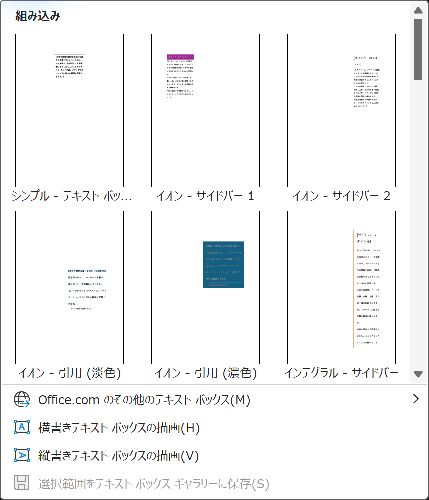
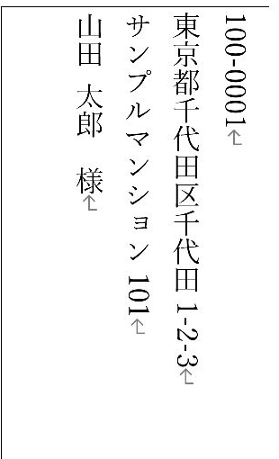

Word差し込み印刷で長い住所・会社名を枠内で折り返す方法：テキストボックスで宛名崩れを防ぐ
宛名枠の幅と高さを決め、長い住所が欠けないように確認します。
ふつう（Lv.3）
- 枠を描く
- 列を挿入
- 折り返し・位置
- 長い宛名を確認
目次
最初に選ぶ方法：本文・表で足りるか確認します
普通の案内文は本文へ、宛名ラベルはラベルの表へ差し込めば十分です。窓あき封筒など、宛名の場所と幅を固定したいときにテキストボックスを使います。フィールドコードは編集しません。
幅を決めると住所が折り返されますが、高さが不足すると下の文字が隠れます。「折り返した」だけで完成と判断せず、最後の氏名まで確認します。
準備：文書を接続し、長い住所を選びます
- Excelの表を保存し、Wordの新しい文書を開きます。
- 「差し込み文書」→「宛先の選択」→「既存のリストを使用」を押し、保存したExcelファイルを選びます。
- 「テーブルの選択」で使うシート名を選びます。1行目が見出しなら「先頭行をタイトル行として使用する」をオンにして「OK」を押します。
- 「アドレス帳の編集」を開き、氏名・件数・空白の行がないことを確認して「OK」を押します。
住所1は市区町村・番地、住所2は建物名に分けておくと、建物名の前で改行できます。最も長い会社名・建物名と、住所2が空の人を試す対象にします。
手順1テキストボックスを描く
- 「挿入」→「テキストボックス」→「横書きテキストボックスの描画」を選びます。
- 宛名を置く場所で左上から右下へドラッグします。まずは横80mm・縦45mm程度を練習の目安にします。実物の窓や宛名欄の寸法が優先です。
- 枠線をクリックして選択し、「図形の書式」の「サイズ」で幅と高さを指定します。文字内をクリックした状態と、枠を選んだ状態を区別します。

手順2枠の中へ差し込みフィールドを入れる
- 枠内をクリックし、文字のカーソルが出ることを確認します。
- 「差し込み文書」→「差し込みフィールドの挿入」で郵便番号_印刷用を挿入します。
- Enterで改行し、住所1、住所2、会社名、氏名を順に入れます。氏名の後ろへ「 様」を入力します。
〒«郵便番号_印刷用»
«住所1»
«住所2»
«会社名»
«氏名» 様「«氏名»」などの記号をキーボードで入力しても差し込みにはなりません。表示したい位置をクリックして「差し込みフィールドの挿入」から列名を選ぶ操作で入れます。Enterで次の行へ移り、次の列を挿入します。

手順3枠内の折り返しと余白を設定する
- テキストボックスの枠線を右クリックし、「図形の書式設定」を開きます。
- 「文字のオプション」→「テキストボックス」で「図形内でテキストを折り返す」を確認します。設定名・項目の有無は版や図形によって異なります。
- 内部余白を確認します。まず上下左右2mm程度を目安にし、実物の枠より文字が出ないよう調整します。
- 固定の宛名欄では、文字に合わせて図形が広がる自動調整を避け、サイズを維持して収まりを確認します。
「図形の書式」→「文字列の折り返し」は、周囲の本文が図形をどう避けるかの設定です。枠内の文字を折り返す設定とは別です。
手順4位置を固定し、枠線を消す
- 枠を選び、「レイアウト オプション」から本文との配置方法を選びます。固定位置の宛名なら、本文に重ねられる「前面」などを使います。
- 「ページ上で位置を固定」を選びます。より正確に指定する場合は「その他のレイアウト オプション」で、基準をページにした水平・垂直の位置を指定します。
- 確認中は枠線を残しておき、配置が決まったら「図形の書式」→「図形の塗りつぶし」→「塗りつぶしなし」、「図形の枠線」→「枠線なし」にします。
手順5短い住所・長い住所・空欄を比べる
- 「結果のプレビュー」をオンにし、長い住所の人へ切り替えます。
- 住所が折り返された後も、会社名と最後の「氏名 様」がすべて見えるか確認します。
- 一時的に枠を下へ広げ、隠れていた文字が出てこないか確認します。出る場合は元の高さが不足しています。
- 幅・高さを許容範囲で広げる、住所2の改行位置を変える、段落前後の余白や文字サイズを調整する順で見直します。
- 「完了と差し込み」→「個々のドキュメントの編集」→「すべて」で完成文書を作り、全ページを確認します。

窓あき封筒は、完成文書を普通紙へ印刷して実際に折り、宛名全体が窓から見えるかを確かめます。画面の位置だけでは判断できません。